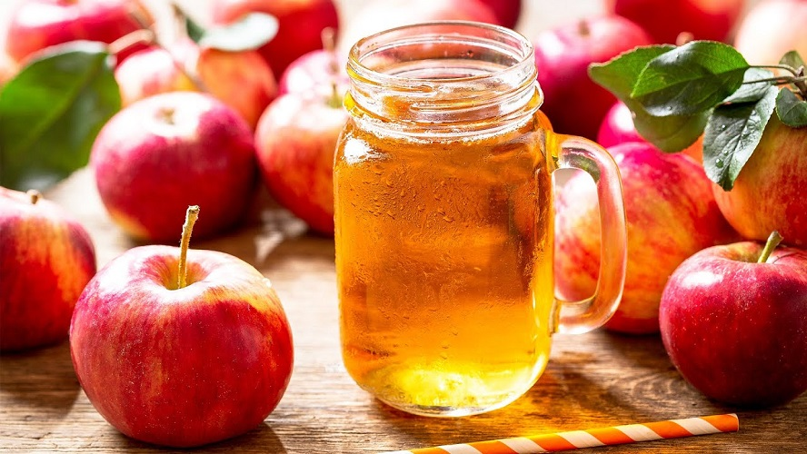

| એપલ જ્યૂસના 5 સ્વાસ્થ્ય લાભો |
| તેમાં એન્ટીઑકિસડન્ટ પ્રવૃત્તિ હોઈ શકે છે |
| તે ડાયાબિટીસમાં મદદ કરી શકે છે. |
| તે ચેતા કોષો પર રક્ષણાત્મક અસર કરી શકે છે. |
| તે હૃદય રોગમાં મદદ કરી શકે છે. |
| તે વજન વ્યવસ્થાપનમાં મદદ કરી શકે છે તેમાં કેન્સર વિરોધી ક્ષમતા હોઈ શકે છે. |
|
|
- 2 ગ્લાસ પાણી
- 2 એપલ
- 3 ચમચી ખાંડ
- 1 ચમચી કાળું મીઠુ
- બરફ
|
|
- સૌપ્રથમ એક જગ માં પાણી લો. સફરજન ને ધોઈ છાલ ઉતારી છીણી લો. હવે પાણી માં સફરજન નું છીણ, મીઠુ, ખાંડ ને બરફ ઉમેરી ક્રશ કરીલો.
- સર્વિન્ગ ગ્લાસ માં લઇ ચીલ સર્વે કરો.